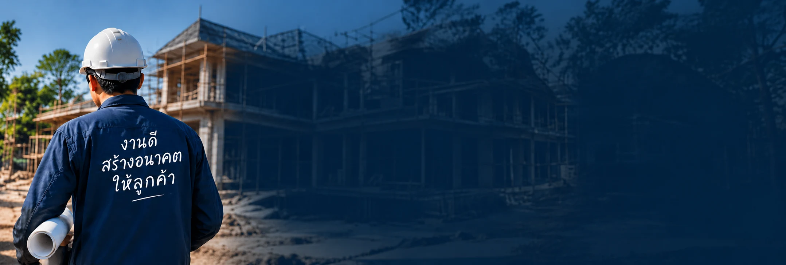

ศูนย์รวมผู้รับเหมาไทย
หาช่างดี สร้างชีวิต! ค้นหาช่าง ดูผลงานได้ ติดต่อโดยตรง ช่างดีมีทั่วไทย เชื่อมต่อเจ้าของบ้านกับช่างคุณภาพ หาช่างดี สร้างบ้านดี สร้างอนาคตที่ดีกว่า
เริ่มค้นหาผู้รับเหมา
ประเภทงานยอดนิยม
- 5ผู้รับเหมาทั่วไทย
- 20ผลงานจริง
- 4.5/5คะแนนเฉลี่ย (6 รีวิว)
- ตรวจข้อมูลอนุมัติก่อนเผยแพร่
ช่างแนะนำ
ผู้รับเหมาคุณภาพที่ผ่านการตรวจสอบแล้ว
วิธีใช้งาน
เพียงไม่กี่ขั้นตอน ก็หาช่างได้เลย
- 1
ค้นหาช่าง
เลือกจังหวัดและประเภทงานที่คุณต้องการ
- 2
ดูข้อมูลและผลงาน
เปรียบเทียบโปรไฟล์ รีวิว และผลงานจริง
- 3
ติดต่อโดยตรง
โทรหรือแชทกับช่างได้เลย ไม่ผ่านนายหน้า
- 4
เริ่มงานได้เลย
ตกลงรายละเอียดงานกับช่างที่คุณเลือก
ทำไมต้องใช้ หาช่าง?
แพลตฟอร์มที่เชื่อมต่อเจ้าของบ้านกับช่างคุณภาพทั่วประเทศ
ตรวจสอบแล้ว
ผ่านการตรวจสอบข้อมูลก่อนเผยแพร่โปรไฟล์
ประหยัดเวลา
ค้นหาและเปรียบเทียบได้ภายในที่เดียว
ติดต่อโดยตรง
ไม่มีค่าคอมมิชชัน คุยกับช่างได้เลย
รีวิวจากผู้ใช้งานจริง
ดูผลงานและคะแนนประกอบการตัดสินใจ


- เพิ่มโปรไฟล์ฟรี
- ลงผลงานฟรี
- เข้าถึงลูกค้าทั่วไทย
- สร้างความน่าเชื่อถือ
เสียงจากผู้ใช้งานจริง
ความประทับใจจากเจ้าของบ้าน และผู้ว่าจ้างทั่วประเทศ
หาช่างง่ายมาก ติดต่อได้สะดวก ดูผลงานก่อนตัดสินใจได้

ลูกค้าที่ใช้บริการจริง
รีวิวถึง ช่างเอก รับสร้างบ้านทีมงานให้คำแนะนำดี อธิบายรายละเอียดงานชัดเจน
ลูกค้าที่ใช้บริการจริง
รีวิวถึง ทีมช่างบ้านสวยดูข้อมูลแล้วเปรียบเทียบช่างในพื้นที่ได้ง่ายขึ้น
ลูกค้าที่ใช้บริการจริง
รีวิวถึง ส.ก่อสร้าง 2019มีภาพผลงานให้ดู ช่วยให้เลือกช่างได้ตรงกับงานที่ต้องการ
ลูกค้าที่ใช้บริการจริง
รีวิวถึง ช่างหลังคามืออาชีพชื่อและข้อความรีวิวยาวเพื่อทดสอบการตัดบรรทัดบนมือถือ ติดต่อช่างโดยตรงและคุยรายละเอียดก่อนเริ่มงานได้สะดวก
ลูกค้าที่ใช้บริการจริง
รีวิวถึง ไฟฟ้าเทคโนโลยีตัวอย่างสำหรับตรวจปุ่มเลื่อนรีวิว ไม่ใช่ข้อมูลผู้ใช้งานจริง
ลูกค้าที่ใช้บริการจริง
รีวิวถึง ช่างเอก รับสร้างบ้าน
บทความ & เคล็ดลับ
ไอเดียดี ๆ เพื่อบ้านในฝันของคุณ